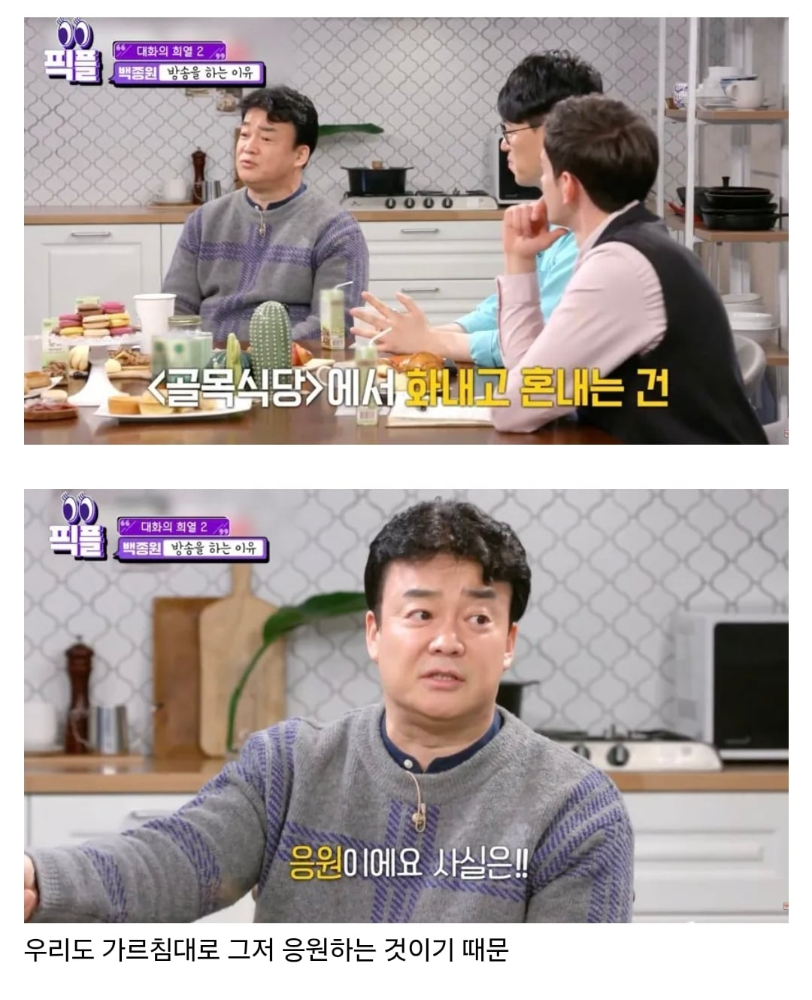

우리가 백종원을 까도 괜찮은 이유
댓글
")
")

고소한대매
그니까 까도는 된다고
뒷일만 재차하면 전기콘센트에 젓가락 두개를 쑤셔 넣는건 너도되고 나도 되잖아
까도 된댔지 고소 안한다곤 안했잖음 ㅇㅇ
근데 꼽도 존나게 줌
이건 저런 포장도 불가능함
ㅈㄴ열받는게 여자친구가 요리해줄때마다
백종원의 요리비책 레시피보고 해주는데
해줄때마다 맛 ㅈㄴ없음 그래서
여자친구 요리실력 문제인가?하고 내가 해보면
맛 ㅈㄴ없음 걍 레시피 문제임
나도 씨발 내 손이 문제인가 제대로 똑같이 한번 더 해보고서야 그때 깨달았음ㅋㅋㅋㅋㅋㅋㅋㅋ
요리비책은 백종원 논란 전에도 말많았고 한 번 당해본 사람은 다시는 안따라함ㅋㅋㅋ
근데 입맛이 취향탈 수는 있어도
백종원 레시피 괜찮은 것도 많음
애초에 베이스가 인터넷에서 긁어온 거라
ㅇㅈ 씨벌 김대석쉐에에에프가 낫지 존나달어 여기는 그냥 개미천국임
레오:이렇게 하면 무조건 맛있어요~
빼액:이렇게 해서 맛없으면 님이 요리를 못하는거에요~
홍콩반점은 맛있던데 다른 음식점은 어떰?
연안식당, 더본.... 한국 프차 식음 기업중에서 상장하고. 편견을 굳혀주는 사람들이 참 많네...
백여 나종원 선생
그 응원 제가 직접한번
응원도 백종원이 개발한거거든요
빽씨 응원한다!!
돌아갈까봐 그래 돌아갈까봐!